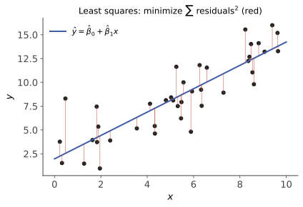

统计 V · 线性回归与方差分析
统计线收官页，也是本站与机器学习的正式接壤处：线性回归是"第一个机器学习模型"，而它在统计里是有完整推断配套（显著性、区间、诊断）的严谨工具——这套配套恰是纯 ML 视角容易缺失的部分。方差分析则把 t 检验推广到多组比较。
1. 一元线性回归

模型 \(Y_i = \beta_0 + \beta_1 x_i + \varepsilon_i\)，\(\varepsilon_i\) i.i.d. \(N(0, \sigma^2)\)。（理论出身：二维正态的条件期望是线性的——概率 III 性质 2；一般总体则视为对 \(E[Y\mid x]\) 的线性逼近——概率 IV"最佳预测"的可实现版。）
最小二乘估计（OLS）：\(\min_{\beta_0,\beta_1}\sum(y_i - \beta_0 - \beta_1 x_i)^2\)，求偏导置零（正规方程）解得
（斜率 = 样本协方差/样本方差 ≈ \(\rho\frac{\sigma_y}{\sigma_x}\)——与概率 III 二维正态条件期望的系数严丝合缝；回归线必过重心 \((\bar x, \bar y)\)。）正态误差下 OLS = MLE（统计 II 的对应再现）。
Gauss–Markov 定理（陈述）：误差零均值、同方差、不相关时，OLS 是最佳线性无偏估计（BLUE）——线性无偏类里方差最小。（不需要正态性；正态时更强——在所有无偏估计里最优。）
2. 推断配套（统计版回归比 ML 版多出的部分）
方差估计：\(\hat\sigma^2 = \frac{\text{SSE}}{n-2}\)（残差平方和，自由度扣掉两个参数）。
斜率的检验与区间：\(\hat\beta_1 \sim N\big(\beta_1, \frac{\sigma^2}{S_{xx}}\big)\)，代入 \(\hat\sigma\) 得
回归显著性检验 \(H_0: \beta_1 = 0\)（"x 对 y 到底有没有线性作用"——回归分析第一问）即由它完成；置信区间照统计 III 的枢轴量套路。
拟合优度：平方和分解 \(\text{SST} = \text{SSR} + \text{SSE}\)（总变差 = 回归解释 + 残差），
（一元情形 \(R^2 = r^2\)，相关系数的平方。）⚠️ \(R^2\) 高 ≠ 模型对：非线性关系可以有高 \(R^2\)，画残差图（残差应无结构地散布）是不可省略的诊断步骤——Anscombe 四组数据（相同的 \(R^2\) 与回归线、完全不同的散点形态）是这条警告的传世插图。
预测的两种区间（宽度不同，语义不同）：对 \(E[Y\mid x_0]\) 的置信区间窄；对单个新观测 \(Y_0\) 的预测区间宽（多加一份 \(\sigma^2\) 的个体噪声——概率 IV 方差分解的实战）。两者都在 \(x_0\) 远离 \(\bar x\) 时变宽——外推危险的定量表达。
3. 多元回归一瞥（矩阵语言，高代上岗）
\(Y = X\beta + \varepsilon\)（\(X\) 为 \(n \times p\) 设计矩阵）：
——高代最小二乘/投影的原样复用：\(\hat Y = X\hat\beta\) 是 \(Y\) 向 \(X\) 列空间的正交投影。共线性（\(X^\top X\) 接近奇异）导致估计方差爆炸 ⇒ 岭回归 \((X^\top X + \lambda I)^{-1}X^\top Y\)——ai 课 01 讲的公式在此认祖归宗（贝叶斯视角 = 高斯先验的 MAP，统计 II/概率 I 的对应）。
🔗 从这里向 ML 的分岔：统计关心 \(\hat\beta\) 的推断（哪些变量显著、区间多宽），ML 关心预测（测试集误差）；变量多起来后正则化与交叉验证接管模型选择（ai 课 01 讲）——两个学科在同一个公式上分道扬镳，又在实践中殊途同归。
4. 单因素方差分析（ANOVA）
问题：\(k\) 组均值是否全相等（t 检验只能两组；多次两两 t 检验会引爆多重检验问题——统计 IV）。
思想：把总变差拆成组间（处理效应）与组内（随机噪声）：
（概率 IV 全方差公式"组间 + 组内"的样本版。）\(H_0\)（各组均值相等）下
\(F\) 大 ⇒ 组间差异远超噪声水平 ⇒ 拒绝"全相等"。（进一步找"谁和谁不同"用多重比较法，知其名。）回归与 ANOVA 本是一家：把组别编码成哑变量，ANOVA 就是回归的特例——线性模型一统江湖。
5. 典型例题
例 1（回归全流程） 广告费 x 与销售额 y，\(n = 10\)：\(S_{xx} = 90,\ S_{xy} = 225,\ \bar x = 5, \bar y = 20\)，SSE \(= 27\)。 解：\(\hat\beta_1 = 2.5,\ \hat\beta_0 = 7.5\)；\(\hat\sigma^2 = 27/8 = 3.375\)；检验 \(H_0: \beta_1 = 0\)：\(T = \frac{2.5}{\sqrt{3.375/90}} \approx 12.9 \gg t_{0.025}(8) = 2.306\)——回归极显著。每加 1 单位广告费，销售额平均增 2.5（附带整套不确定度，这就是统计版回归的完整交付）。
例 2（残差图的必要性） 数据真实关系 \(y = x^2\)（\(x \in [0, 10]\)），强行线性回归可得 \(R^2 \approx 0.94\)——数字很漂亮，残差图却呈明显 U 形（先正后负再正）。结论：\(R^2\) 看"解释了多少"，残差图看"漏了什么"，二者缺一不可。
例 3（ANOVA 判型） 三种教学法各 8 人，算得 SSA \(= 84\)，SSE \(= 168\)。\(F = \frac{84/2}{168/21} = 5.25 > F_{0.05}(2, 21) \approx 3.47\) ⇒ 教学法之间存在显著差异（至于哪两种之间——多重比较的活）。\(\blacksquare\)
统计线五页完工。至此"分析+代数双主干 → 概率 → 优化 → 统计"的 AI 衔接主干道全线贯通；侧栏其余占位课程（数值分析、随机过程、实变、泛函……）按需增补——每一门的规划骨架都已写在占位页里。